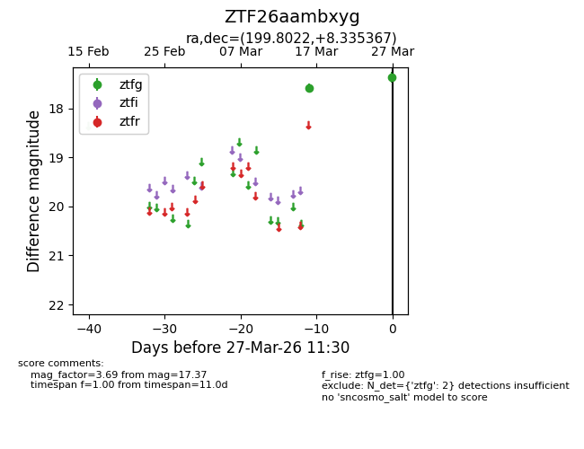
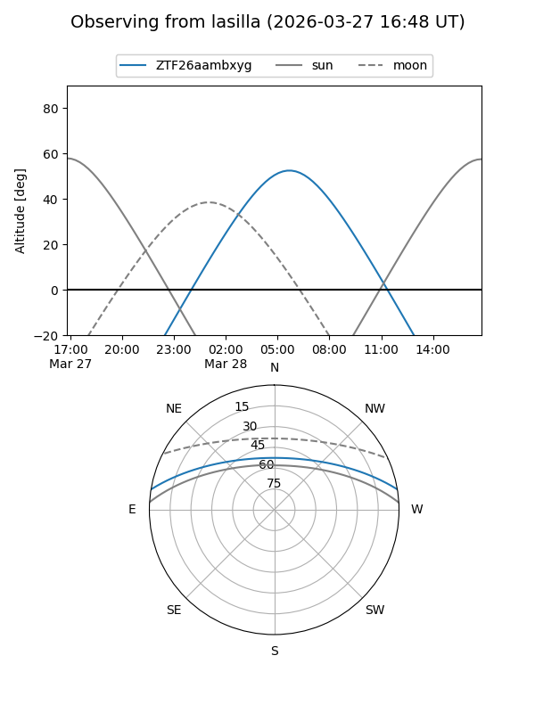
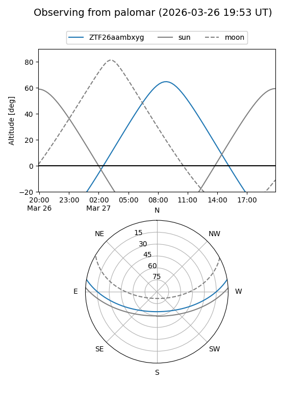

ZTF26aambxyg
Target ZTF26aambxyg at 2026-03-27 11:33
Aliases and brokers:
FINK: link
Lasair: link
ALeRCE: link
alt names
ZTF26aambxyg (ztf,fink_ztf)
Coordinates:
equatorial (ra, dec) = 199.8022,+8.33537
equatorial (HMS+DMS) = 13:19:12.53,+08:20:07.32
galactic (l, b) = (323.4936,+70.09061)
Flags:
Photometry:
last ztfg=17.37
2 ztfg detections
Lightcurve

Visibility


Additional plots